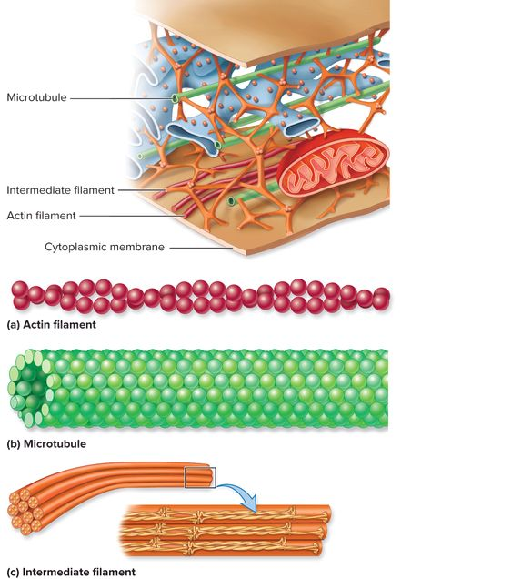

Lisosom merupakan organel sel bermembran yang berisi larutan enzim hidrolitik. Lisosom berperan dalam pencernaan makromolekul intraseluler. Enzim hidrolitik pada lisosom terdiri atas 40 jenis, termasuk diantaranya yaitu enzim protease, nuclease, glikosidase, lipase, fosfolipase, fosfatase dan sulfatase. Enzim harus di aktivasi oleh pembelahan proteolitik dan membutuhkan lingkungan asam untuk dapat bekerja. Bagian dalam lisosom dipertahankan keasamannya pada pH sekitar 4,5-5,0. Membran lisosom menjaga enzim pencernaan keluar ke sitosol sehingga tidak mengganggu kestabilan pH sitosol. Seperti semua organel intraseluler lain, lisosom tidak hanya terdiri atas kumpulan enzim yang unik, tapi juga memiliki membran yang unik di sekelilingnya. Sebagian besar merupakan protein membran lisosomal, sebagai contoh glicosilasi yang sangat luar biasa membantu menjaga mereka dari protease lisosomal di lumen. Transpor protein di membran lisosom membawa produk akhir dari pencernaan makromolekul seperti asam amino, gula dan nukleotida ke sitosol, di mana sel dapat menggunakan kembali atau mengekskret mereka.
Mikrobodi atau badan mikro hampir menyerupai lisosom, berbentuk agak bulat, diselubungi membran tunggal, dan di dalamnya berisi enzim katalase dan oksidase. Organela ini disebut badan mikro karena ukurannya kecil, hanya bergaris tengah 0,3–1,5 μm. Terdapat dua tipe badan mikro, yaitu peroksisom dan glioksisom. Peroksisom terdapat pada sel hewan, fungi, dan daun tanaman tingkat tinggi.
Peroksisom adalah organel yang mengandung banyak enzim katalase. Enzim katalase berfungsi menguraikan senyawa beracun peroksida (H2O2). Hasil penguraian peroksida berupa air (H2O) dan oksigen(O2). Pada hewan, peroksisom banyak terdapat di dalam hati dan ginjal. Peroksisom yang hanya terdapat pada tumbuhan disebut glioksisom. Glioksisom berfungsi mengoksidasi asam lemak. Organel ini banyak ditemukan di dalam jaringan lemak pada biji yang sedang berkecambah.
Peroksisom besarnya hampir sama dengan lisosom (0,3 - 15 μm), dan dibatasi oleh membran tunggal. Peroksisom dihasilkan oleh retikulum endoplasma. Peroksisom juga penuh berisi enzim dan yang paling khas adalah katalase. Enzim ini mengkatalis perombakan hidrogen peroksida (H2O2), yaitu produk yang berpotensi membahayakan metabolisme sel.
Peroksisom juga berperan dalam perubahan lemak menjadi karbohidrat, dan dalam perubahan purin dalam sel. Pada hewan, peroksisom terdapat pada sel-sel hati dan ginjal. Sedangkan, pada tumbuhan, terdapat pada berbagai tipe sel. Peroksisom sel-sel tumbuhan sering mengandung bahan-bahan yang terkristalisasi.